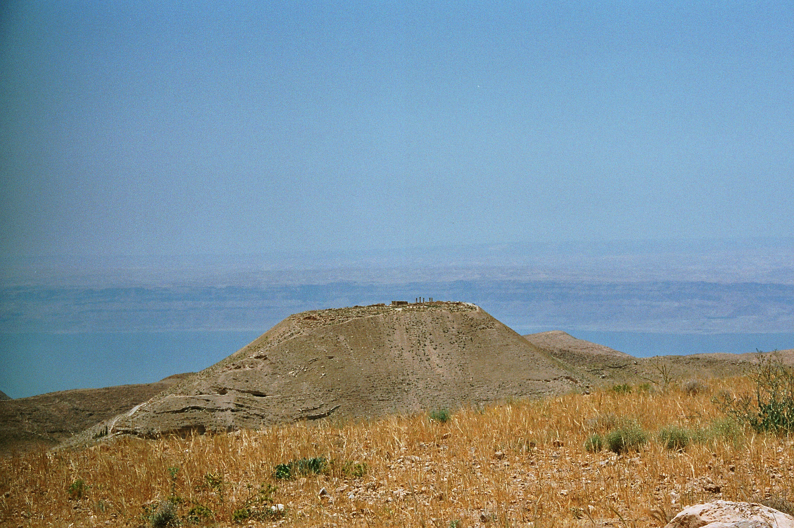

Machaerus

- Find Name
- Machaerus
- Historical Period
- Herodian Period
- Artifact Date
- 1st century BC–1st century AD (rebuilt by Herod the Great)
- Date Discovered
- 1960s (excavated); renewed excavations from 2009
- Discovery Location
- Machaerus, Jordan (east of the Dead Sea)
- Current Location
- In situ, Jordan
- Timeline Era
- Life of Christ
- Description
- Herod's eastern desert fortress, with palaces, baths, and siege works overlooking the Dead Sea. The Gospels do not name the place where John the Baptist was imprisoned and executed, but Josephus states it was Machaerus, and the excavated fortress matches his description of a stronghold where Herod Antipas could hold a prisoner securely.
- Biblical Significance
- John's courage cost him his head, and this fortress is where tradition and Josephus place that cost. It gives the Baptist's final months a landscape: a palace prison in the desert, far from the Jordan crowds, where a prophet who would not flatter a king was silenced.
- Evidence Class
- Contextual
- Interpretations
- Scholars accept Machaerus as a Herodian fortress; the identification as John's prison rests on Josephus rather than the Gospels, which name no location, so it is presented as Josephus's account, not as a Gospel statement.
- Scripture Illuminated
- Related People
- Related Books
Awaiting Review Not yet checked against scholarly sources. Treat its claims as provisional until this entry is reviewed. About verification
Last reviewed: not yet reviewed